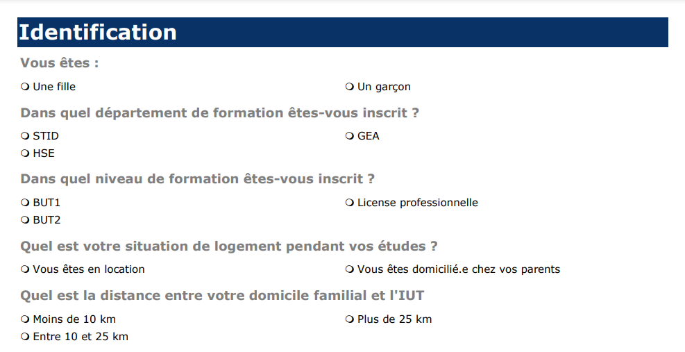

Mes projets réalisés en BUT SD
-
Présentation d'un territoire économique et culturel
J'ai réalisé une présentation du territoire économique et culturel de Nantes en anglais. Cette présentation a mise en avant les différents atouts de la région, notamment son patrimoine culturel, ses entreprises et son dynamisme économique.
Technologies utilisés : Word et Powerpoint
apprentissage critique : Mesurer l’importance d’une expression précise et nuancée dans la communication en français et dans une langue étrangère des résultats. -
Gestion de fichiers
J'ai créé un outil pour convertir des fichiers JSON en CSV, ce qui a mis en valeur mes compétences en informatique telles que la maîtrise de la syntaxe des langages de programmation.
Technologies utilisés : Python, Jupyter Notebook, Pandas et Numpy
apprentissages critiques :- Comprendre les structures algorithmiques de base et leur contexte d’usage.
- Réaliser que les sources de données ont des caractéristiques propres à considérer (variation, précision, mise à jour...).
-
Apprendre en situation la production de données en entreprise
Ceci est une présentation d'une analyse de données exploratoire simple portant sur la population de la Seine-Saint-Denis sous forme de pdf
Technologies utilisés : Python (Pandas, Numpy, Matplotlib, Seaborn et Plotly) et Word
apprentissages critiques :- Identifier l’importance de contextualiser ses données.
- Comprendre les intérêts de la data visualisation et de l’infographie
-

Mise en œuvre d'une enquête
Grâce à mes compétences acquises en cours, j'ai réalisé le questionnaire d'une enquête destiné aux étudiants afin de mieux connaître leurs habitudes quant au repas du midi.
Technologies utilisés : Le sphinx
apprentissages critiques :- Identifier l’importance de contextualiser ses données.
- Mesurer l’importance d’une expression précise et nuancée dans la communication en français.
-

Tableau de données et analyse exploratoire simple
Compte rendu des résultats d'une étude mené portant sur les étudiants niortais et l'utilisation de leurs portables.
Technologies utilisés : Word et le Sphinx
apprentissages critiques :- Comprendre l’intérêt des synthèses numériques et graphiques pour décrire une variable statistique.
- l’importance de mettre en évidence des résultats clés par l’utilisation d’indicateurs pertinents.
-
Création d'un réporting
Création d'un reporting permettant à un étudiant en science des données d'entrer ses notes pour que le logiciel calcule précisément sa moyenne pondérée pour chacune des trois compétences. Le logiciel indiquera alors si l'élève passe en deuxième année ou non.
Technologies utilisés : Excel et VBA
apprentissages critiques :- Connaître la syntaxe des langages et savoir l’utiliser.
- l’importance de mettre en évidence des résultats clés par l’utilisation d’indicateurs pertinents.
-
Conception et implémentation d'une base de données
Création d'une interface graphique permettant de créer et alimenter une base de données puis d'exécuter des requêtes SQL sur cette base de données.
Technologies utilisés : Python (Tkinter et Pandas) et SQL
apprentissages critiques :- Correctement interpréter et prendre en compte le besoin du commanditaire ou du client.
- Réaliser que les sources de données ont des caractéristiques propres à considérer.
- Prendre conscience de l’intérêt de la programmation.
-

Régression linéaire sur données réelles
J'ai effectué une prédiction des prix de maisons situés en Nouvelle-Aquitaine en utilisant mes cours de régression linéaire et un arbre de décision.
Technologies utilisés : Python et R
apprentissages critiques :- Prendre conscience de l’intérêt de la programmation.
- Mesurer l’importance de mettre en évidence des résultats clés par l’utilisation d’indicateurs pertinents.
- Comprendre l’intérêt des synthèses numériques et graphiques pour décrire une variable statistique.
-

Construction et présentation d’indicateurs de performances
Afin de mettre en valeurs mes compétences en économie et en gestion , j'ai été mené à analyser l'évolution de la comptabilité du laboratoire science et nature.
Technologies utilisés : Excel et Word
apprentissages critiques :- Mesurer l’importance de mettre en évidence des résultats clés par l’utilisation d’indicateurs pertinents.
- Comprendre l’intérêt des synthèses numériques et graphiques pour décrire une variable statistique.
-
Echantillonnage et estimation
J'ai effectué une estimation de la population de la région Normande en tirant un échantillon de communes.
Technologies utilisés : R, Excel et SAS
apprentissages critiques :- Prendre conscience de l’intérêt de la programmation.
- Mesurer l’importance de mettre en évidence des résultats clés par l’utilisation d’indicateurs pertinents.
- Comprendre l’intérêt des synthèses numériques et graphiques pour décrire une variable statistique.
-

concours Dataviz
Lors du concours dataviz, j'ai crée un dashboard interactif à partir de données de la SNCF. Le dataviz a été classé premier du departement science des données de Niort.
Technologies utilisés : Power BI
apprentissages critiques :- Comprendre les intérêts de la data visualisation et de l’infographie.
- Mesurer l’importance de mettre en évidence des résultats clés par l’utilisation d’indicateurs pertinents.
-

Analyse de données, Reporting et Datavisualisation
Le dernier projet de première année de BUT Science des données était un projet de groupe. En appliquant la méthode scrum, nous avons créées une application facilitant le recrutement du groupe IMA.
Technologies utilisés : Excel et VBA
apprentissages critiques :- Correctement interpréter et prendre en compte le besoin du commanditaire ou du client.
- Comprendre les intérêts de la data visualisation et de l’infographie.
- Lors de la restitution des résultats, mesurer l’importance d’expliciter également la démarche suivie.
- Mesurer l’importance de mettre en évidence des résultats clés par l’utilisation d’indicateurs pertinents.